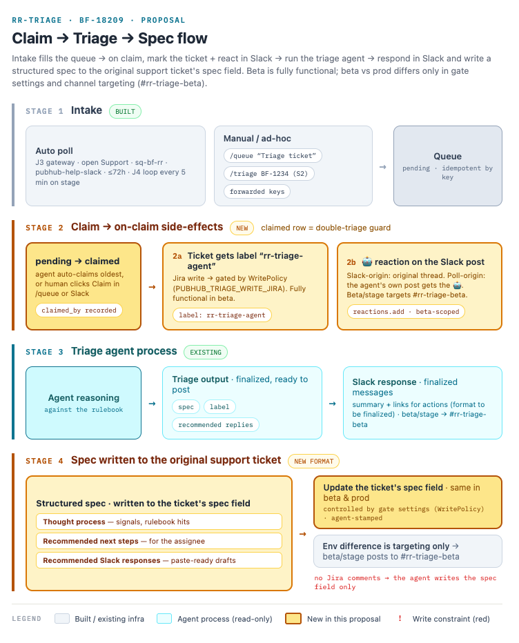

An agent that took over support-ticket triage: classifies handling + routing, then a gated investigator agent reads the live system, code, telemetry and docs to draft the fix and reply — a human approves every call.
An agent that took over support-ticket triage: classifies handling + routing, then a gated investigator agent reads the live system, code, telemetry and docs to draft the fix and reply — a human approves every call.
I spearheaded an AI agent to take over support-ticket triage, work that was consuming roughly one in seven hours of the team's time. It runs the full loop in production: classify the ticket, investigate the live system, then draft the fix and the reply, with a human signing off on every action.
A classifier handles and routes each ticket, then a gated investigator agent reads the live system, code, telemetry, and docs to draft a fix and a reply. A human approves every call before anything goes out. It was trained on two years of resolved history and improves with every correction. See the Architecture diagram for the shape.
A concept design for how a claimed ticket moves end to end: intake fills the queue, claiming labels the ticket and reacts in the channel, the triage agent runs against the rulebook, and a structured spec is written back to the ticket — with a human gate on every write.

It reached a team-wide, month-long beta running the full loop in production, trained on two years of resolved tickets and improving with every correction.